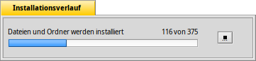

LegacyPackageInstaller
LegacyPackageInstaller
| Deskbar: | kein Eintrag; wird über Doppelklick auf eine entspechende Datei aufgerufen. | |
| Ort: | /boot/system/apps/LegacyPackageInstaller | |
| Einstellungen: | keine |
Der LegacyPackageInstaller ist ein Programm für die Installation von BeOS Paketen im PKG Format. Es besitzt eine einfach zu benutzende Oberfläche, mit der sich Pakete schnell installieren lassen.
Es startet automatisch wenn man Dateien mit der Endung .pkg öffnen will.

Über das Hauptfenster gelangt man zu zwei Konfigurationen:
- Installaionstyp (je nach Entwickler kann es mehr als eine (Standard) Installationsoption geben)
- Installationsort (es können nur ganze Partitionen oder Festplatten ausgewählt werden, keine eigenen Pfade)
Ein Klick auf "Installieren" startet Auspacken und Installation.
An dieser Stelle können Warnungen und Fehler auftauchen, die anzeigen welche Bibliotheken und Abhängigkeiten noch fehlen, bevor das Programm lauffähig ist. Möglicherweise müssen diese Pakete zuerst installiert werden, bevor das eigentliche Paket installiert werden kann.
Ist die Installation abgeschlossen, sollte die installierte Anwendung im Anwendungs-Menü der Deskbar erscheinen.